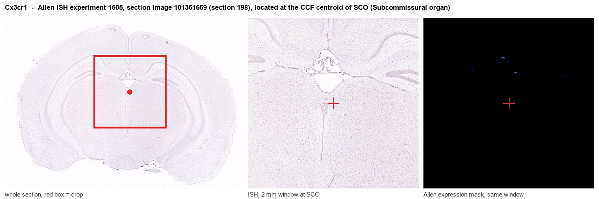

Cx3cr1
CX3C chemokine receptor 1 (C-X3-C CKR-1) (CX3CR1) (mCX3CR1) (Fractalkine receptor)
Spatial tier: RESTRICTED · Class: GPCR · Top region: SCO (Subcommissural organ) · Positive regions: 19/554
41.5Discovery Score
37.7Targetability Score
CEvidence grade C
What this means: Cx3cr1: fine CCF profile is restricted toward SCO (top regions: SCO, AId1, TEa1, CA1slm, AUDpo1; 19 positive regions); direct spatial validation is still required.
Function in SCO: evidence, prediction, innovation
- Gene function
- Cx3cr1 encodes the Gi-coupled receptor for fractalkine (CX3CL1), a chemokine that is membrane-tethered on neurons and shed as a soluble form. In the CNS it is expressed almost exclusively by microglia and by perivascular and border-associated macrophages, and it mediates neuron-to-microglia signalling that controls microglial surveillance, developmental synaptic pruning and restraint of inflammatory activation.
- Region function
- The subcommissural organ is a tiny ependymal secretory gland at the entrance of the cerebral aqueduct beneath the posterior commissure; it releases SCO-spondin into the CSF, where it condenses into Reissner's fibre, and its failure causes aqueductal stenosis and hydrocephalus.
- Published in this region
- expression only No region-specific literature found for the subcommissural organ specifically. The closest finding is Kawai 2020, who documented a transient increase in microglial C1q expression in the circumventricular organs of adult mice during LPS-induced inflammation, showing that CVO-associated microglia are a distinct, inflammation-responsive population; Chakravarty 2005 showed that non-haematopoietic cells at these barrier interfaces sustain CNS inflammation during endotoxaemia. Cx3cr1-GFP mice are the standard means of visualising these cells, so brain-wide reporter expression includes the SCO region.
- Predicted function
- Prediction: a Cx3cr1 signal at the SCO almost certainly reports resident microglia and border macrophages clustered around this leaky, densely vascularised circumventricular gland rather than the ependymocytes themselves. Functionally, CX3CL1-CX3CR1 signalling there should restrain microglial activation next to a fenestrated-vessel interface. Cx3cr1 deletion or CreER-mediated ablation is predicted to increase local microglial reactivity and cytokine release after systemic LPS, and, because SCO-spondin secretion is sensitive to inflammation, to perturb Reissner's-fibre formation and CSF flow rather than to change behaviour directly.
- Innovation
- ★★★☆☆ 3/5 Microglial CX3CR1 is heavily studied brain-wide, but nobody has asked what the microglia surrounding the subcommissural organ do to CSF secretion.
- Tools
- Cx3cr1-GFP (JAX 005582), Cx3cr1-CreER (JAX 021160 and JAX 020940) and Cx3cr1 knockout mice; recombinant CX3CL1; anti-CX3CR1 and anti-IBA1 antibodies; microglia-specific AAV enhancer vectors are now available; FoxJ1-CreER (JAX 027012) for the complementary ependymal compartment.
- References
Direct evidence located at the region

Allen ISH experiment 1605, section image 101361669 (section 198): the section that contains the CCF centroid of Subcommissural organ according to the Allen image-to-atlas alignment (reference_to_image), with a 2 mm window around that point. Left: whole section, red box = window. Middle: ISH signal. Right: Allen's expression-mask view of the same window. open this image in the Allen viewer
Look it up yourself: Allen Mouse Brain ISH for Cx3cr1Allen reference atlas: SCO (structure 599626923)ABC Atlas MERFISH viewer(in the ABC Atlas choose dataset MERFISH-C57BL6J-638850-CCF, colour cells by gene "Cx3cr1" or by parcellation_substructure "SCO")All genes confined to SCO + 3-D brain
Direct spatial evidence
MERFISH REGION LOCATOR

Regional expression figure

Predicted WMB × fine-CCF profile; not direct full-transcriptome spatial measurement.
Spatial profile
Evidence and specificity
- Evidence status
- PREDICTED_FINE
- Direct sources
- None; predicted localization only
- Exclusive threshold
- 12 positive regions out of 554
- Spatial specificity
- 0.270
- Top-region fraction
- 0.063
- Filter status
- PASS
Interpretation limits
- Cell-type-to-region projection is imputed expression, not direct spatial measurement.
- Adult reference atlases do not establish stability across age, sex, strain, state, or disease.
- Transcript abundance does not guarantee protein abundance or genetic-tool performance.